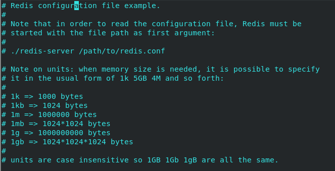
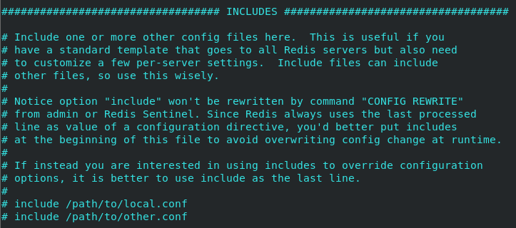
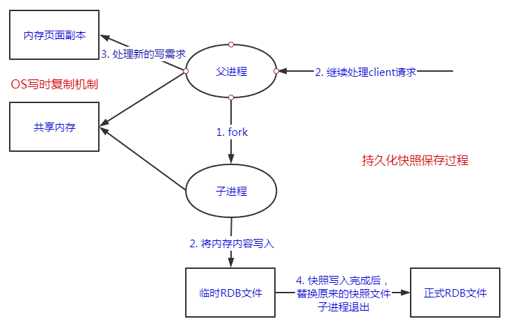
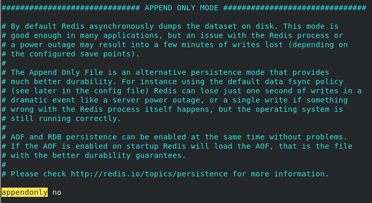
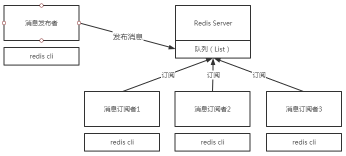
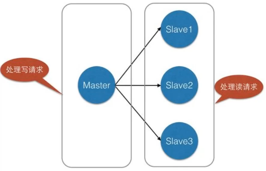
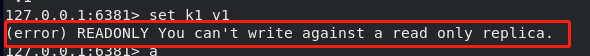
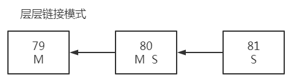
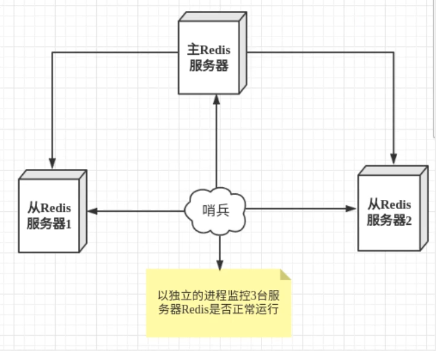
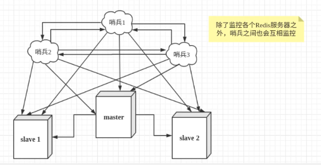

Redis配置文件
单位

配置文件对大小写不敏感
引入其他配置文件 INCLUDES

网络配置 NETWORK
1 2 3 4 5 6 7 8 # 绑定的ip，默认只能本地访问 bind 127.0.0.1 # 保护模式 protected-mode no # 端口 port 6379
通用 GENERAL
1 2 3 4 5 6 7 8 9 10 11 12 13 14 15 16 17 18 19 20 21 22 23 # 守护进程的方式运行 daemonize yes # 如果以后台的方式运行，我们就需要指定一个pid文件 pidfile /var/run/redis_6379.pid # 日志级别 # Specify the server verbosity level. # This can be one of: # debug (a lot of information, useful for development/testing) 大量的信息，用于生产或测试 # verbose (many rarely useful info, but not a mess like the debug level)许多很少用到的信息，单不想debug那个混乱 # notice (moderately verbose, what you want in production probably) 生产环境 # warning (only very important / critical messages are logged)仅仅非常重要的信息 loglevel notice # 日志的文件位置名 logfile "" # 数据库的数量，默认是16个 databases 16 # 是否显示logo always-show-logo yes
快照 SNAPSHOTTING
持久化，在规定的时间内，执行了多少次操作，则会持久化到文件 .rdb .aof
redis是内存数据库，如果没有持久化，那么数据断电即失
1 2 3 4 5 6 7 8 9 10 11 12 13 14 15 16 # 如果 900s 内，如果至少有一个key进行了修改，就进行持久化操作 save 900 1 save 300 10 save 60 10000 # 持久化如果出错，是否还需要继续工作 stop-writes-on-bgsave-error yes # 是否压缩rdb文件，需要消耗一些cup资源 rdbcompression yes # 保存rdb文件时，进行错误的检查校验 rdbchecksum yes # 保存的目录 dir ./
复制 REPLICATION
安全设置 SECURITY
未设置密码时
1 2 127.0.0.1:6379> ping PONG
设置密码：
此时进行获取
1 2 3 4 5 127.0.0.1:6379> ping (error) NOAUTH Authentication required. # 登录操作 auth 123
客户端 CLIENTS
1 2 # 设置能连接上redis的最大客户端的数量 maxclients 10000
内存管理 MEMORY MANAGEMENT
1 2 3 4 5 6 7 8 9 10 11 # 配置最大内存容量 maxmemory <bytes> # 内存到达上限之后的处理策略 # 1、volatile-lru： 只对设置了过期时间的key进行LRU（默认值） # 2、allkeys-lru ： 删除lru算法的key # 3、volatile-random： 随机删除即将过期key # 4、allkeys-random： 随机删除 # 5、volatile-ttl ： 删除即将过期的 # 6、noeviction ： 永不过期，返回错误 maxmemory-policy noeviction
AOF配置 APPEND ONLY MODE
1 2 3 4 5 6 7 8 9 10 11 12 13 14 15 16 17 # 默认是不开启AOF的 appendonly no # 持久化的文件名 appendfilename "appendonly.aof" # AOP存储策略 # appendfsync always appendfsync everysec # 美妙执行一次存储，可能会丢失这1s的数据 # appendfsync no # 是否开启重写 no-appendfsync-on-rewrite no # 若开启重写，当文件大小超过64mb时 auto-aof-rewrite-percentage 100 auto-aof-rewrite-min-size 64mb
Redis持久化 RDB（Redis DataBase） 在指定的时间间隔将内存中的数据集快照写入磁盘，也就是Snapshot快照，恢复时将快照文件直接读到内存中。
Redis会单独创建( fork ) 一个子进程来进行持久化，会先将数据写入到一个临时文件中,待持久化过程都结束了,再用这个临时文件替换上次持久化好的文件。整个过程中,主进程是不进行任何I0操作的。这就确保了极高的性能。如果需要进行大规模数据的恢复，且对于数据恢复的完整性不是非常敏感,那RDB方式要比AOF方式更加的高效。RDB的缺点是最后一次持久化后的数据可能丢失。
Redis默认的是RDB，一般情况下不需要修改这个配置。
rdb保存的文件是dump.rdb，生产环境一般需要将这个文件备份

1. 测试 修改配置文件
1 2 3 4 # save 900 1 # save 300 10 # save 60 10000 save 60 3 # 六十秒内修改三次即进行存储
1 2 3 4 5 6 7 8 9 10 11 12 # 执行测试命令 set k1 v1 set k2 v2 set k3 v3 # 此时在外部可以看到生成了一个dump.rdb文件 # 关闭redis shutdown # 再次开启redis，执行查询命令 # 依然可以获取数据 get k1
2. 触发机制
save的规则满足时，会自动触发rdb规则
执行flushall命令，也会触发rdb规则
退出redis，也会产生rdb文件
备份就会生产一个dump.rdb文件
3. 如何恢复rdb文件 只需要将rdb文件放在redis启动目录即可，redis启动时会自动检查dump.rdb 并恢复其中的数据
4. 优缺点
优点：
适合大规模的数据恢复
对数据的完整性不高
缺点
需要一定的时间间隔进行进程操作，如果redis意外宕机了，最后一次修改的数据就没了
fork进程会占用一定的内存空间
AOF（Append Only File）
将所有的写命令都记录下来，恢复的时候再把这些命令全部再执行一遍
aof默认的是文件的无限追加，因此文件会越来越大
以日志的形式来记录每个写操作, 将Redis执行过的所有指令记录下来(读操作不记录) ,只许追加文件但不可以改写文件, redis启动之初会读取该文件重新构建数据,换言之, redis重启的话就根据日志文件的内容将写指令从前到后执行一次以完成数据的恢复工作
AOP保存的文件时appendonly.aof

默认是不开启的，只需要将appendonly 修改为yes之后重启redis，就可以开启aof了
1. 使用及 aof 文件修复 使用 退出查看appendonly.aof文件
1 2 3 4 5 6 7 8 9 10 11 12 *2 $6 SELECT $1 0 *3 $3 set $2 k1 $2 v1
破坏 若此时人为破坏该文件，之后重启redis
再次连接时会报错，表示redis无法连接：
Could not connect to Redis at 127.0.0.1:6379: Connection refused
aof文件修复 redis-check-aof –fix appendonly.aof
如果这个aof文件有错误，这时候redis是启动不起来的，此时需要修复aof文件
redis提供了一个工具用来修复aof文件 redis-check-rdb
1 2 3 4 5 6 7 8 9 10 11 # 执行修复命令 redis-check-aof --fix appendonly.aof # 询问是否执行修复 # 输入 y 执行修复 0x 6e: Expected prefix '*', got: '1' AOF analyzed: size=121, ok_up_to=110, diff=11 This will shrink the AOF from 121 bytes, with 11 bytes, to 110 bytes Continue? [y/N]: y # 表示修复成功 Successfully truncated AOF
修复成功 此时打开 appendonly.aof 文件可以看到人为添加的的部分已经被删除了
重启redsi即可正常连接
2. aof有点和缺点
优点：
每一次修改都同步，文件完整性会非常好
默认每秒同步一次，可能会丢失一秒的数据
不开启时从不同步，效率是最高的
缺点
相对于数据文件而言，aof远大于rdb，修复速度也比rdb慢
aof运行效率也要比rdb慢，所以redis默认的配置就是rdb持久化
总结：
RDB持久化方式能够在指定的时间间隔内对你的数据进行快照存储
AOF 持久化方式记录每次对服务器写的操作，当服务器重启的时候会重新执行这些命令来恢复原始的数据， AOF命令以Redis协议追加保存每次写的操作到文件末尾， Redis还能对AOF文件进行后台重写，使得AOF文件的体积不至于过大。
如果你只希望你的数据在服务器运行的时候存在，即只做缓存，你也可以不使用任何持久化
同时开启两种持久化方式：
在这种情况下，当redis重启的时候会优先载入AOF文件来恢复原始的数据，因为在通常情况下AOF文件保存的数据集要比RDB文件保存的数据集要完整。
RDB的数据不实时，同时使用两者时服务器重启也只会找AOF文件，那要不要只使用AOF呢？作者建议不要，因为RDB更适合用于备份数据库( AOF在不断变化不好备份) ， 快速重启，而且不会有AOF可能潜在的Bug ，留着作为一个万一的手段。
性能建议
因为RDB文件只用作后备用途，建议只在Save 上持久化RDB文件，而且只要15分钟备份一次就够了，即只保留save 900 1这条规则。
如果Enable AOF ， 好处是在最恶劣情况下也只会丢失不超过两秒数据，启动脚本较简单只load自己的AOF文件就可以了， 代价一是带来了持续的IO ，二是AOF rewrite的最后将rewrite过程中产生的新数据写到新文件造成的阻塞几乎是不可避免的。只要硬盘许可，应该尽量减少AOF rewrite的频率， AOF重写的基础大小默认值64M太小了，可以设到5G以上，默认超过原大小
如果不Enable AOF ，仅靠Master-Slave Repllcation 实现高可用性也可以，能省掉一大笔IO，也减少了rewrite时带来的系统波动。代价是如果Master/Slave同时倒掉，会丢失十几分钟的数据，启动脚本也要比较两个Master/Slave中的RDB文件，载入较新的那个，微博就是这种架构。
Redis发布订阅 发布订阅（pub/sub）是一种消息通信模式：发送者（pub）发送消息，订阅者（sub）接收消息。微博、微信、关注系统就是以此实现
Redis客户端可以订阅任意数量的频道
发布/订阅消息图：

消息发送者
频道
消息订阅者
命令及测试
命令
描述
PSUBSCRIBE pattern [pattern …]
订阅一个或多个符合给定模式的频道。
PUBSUB subcommand [argument [argument …]
查看订阅与发布系统状态。
PUBLISH channel message
将信息发送到指定的频道。
PUNSUBSCRIBE [pattern [pattern …]
退订所有给定模式的频道。
SUBSCRIBE channel [channel …]
订阅给定的一个或多个频道的信息。
UNSUBSCRIBE [channel [channel …]
指退订给定的频道。
1 2 3 4 5 6 7 8 9 10 11 12 13 14 # 客户端1（订阅者）订阅一个频道，此时会进入等待状态 127.0.0.1:6379> subscribe pindao1 Reading messages... (press Ctrl-C to quit) 1) "subscribe" 2) "pindao1" 3) (integer) 1 # 客户端2（发布者），在频道中发布一条信息 # 此时在客户端1的窗口中会显示发布的信息 # 1) "message" 提示有一条消息 # 2) "pindao1" 显示来自于哪个频道 # 3) "123" 消息内容 publish pindao1 123
原理
Redis是使用C实现的，通过分析Redis源码里的pubsub.c文件，了解发布和订阅机制的底层实现，籍此加深对Redis的理解。
Redis通过PUBLISH、SUBSCRIBE 和PSUBSCRIBE等命令实现发布和订阅功能。
微信:
通过SUBSCRIBE命令订阅某频道后， redis-server 里维护了一个字典，字典的键就是一个个频道! 而字典的值则是一个链表，链表中保存了所有订阅这个channel的客户端。SUBSCRIBE 命令的关键，就是将客户端添加到给定channel的订阅链表中。
通过PUBLISH命令向订阅者发送消息，redis-server 会使用给定的频道作为键，在它所维护的channel字典中查找记录了订阅这个频道的所有客户端的链表，遍历这个链表，将消息发布给所有订阅者。
Pub/Sub从字面上理解就是发布( Publish )与订阅( Subscribe ) ， 在Redis中，你可以设定对某一个key值进行消息发布及消息订阅，当一个key值上进行了消息发布后，所有订阅它的客户端都会收到相应的消息。这一功能最明显 的用法就是用作实时消息系统，比如普通的即时聊天，群聊等功能。
使用场景
实时消息系统
实时聊天（频道当做聊天室，将消息回显给所有人即可）
订阅，关注系统都可以
稍微复杂的场景，我们会使用消息中间件MQ
Redis主从复制 1. 概念 主从复制，是指将一台Redis服务器的数据，复制到其他的Redis服务器。前者称为主节点(mater/leader) ，后者称为从节点(slave/follower) ;数据的复制是单向的，只能由主节点到从节点。Master以写为主 ， Slave以读为主。
默认情况下，每台Redis服务器都是主节点；且一个主节点可以有多个从节点(或没有从节点) ，但一个从节点只能有一个主节点。
主从复制的作用主要包括：
1、数据冗余：主从复制实现了数据的热备份，是持久化之外的一种数据冗余方式。
一般来说，要将Redis运用于工程项目中，只使用一台Redis是万万不能的 ， 原因如下:单台Redis最大使用内存不应该超过20G。
电商网站上的商品，一般都是一次上传，无数次浏览的，说专业点也就是”多读少写”。
对于这种场景，我们可以使如下这种架构:

业务中80%情况下都是进行读操作，用以减缓服务器的压力，在架构中经常使用
一般最低配为一主二从，因为当主节点挂了时，由于哨兵模式，两个从节点之间可以进行选举，当只有一个从节点时，就无法进行选举
2. 环境配置
只配置从库，不用配置主库
由于redis启动默认就为主机，因此搭建集群时，仅需配置从机即可
1 2 3 4 5 6 7 8 9 10 11 12 127.0.0.1:6379> info replication # 查看当前库的信息 # Replication role:master # 角色 connected_slaves:0 # 从机数量 master_replid:0454c2f247e7962fdc77c5e2a5a1434da8355907 master_replid2:0000000000000000000000000000000000000000 master_repl_offset:0 second_repl_offset:-1 repl_backlog_active:0 repl_backlog_size:1048576 repl_backlog_first_byte_offset:0 repl_backlog_histlen:0
复制3份配置文件，然后修改对应的信息 1 2 3 4 5 6 7 8 9 10 11 12 13 14 15 # 1. 修改端口 port 6380 # 2. 后台运行的 pidfile /var/run/redis_6380.pid # 3. log 日志 logfile "6380.log" # 4. rdb文件 dbfilename dump6380.rdb # 注：若要做主机的服务配置有requirepass（密码）,则需要在从机配置中配置masterauth # 否则连接会出错，主机中会无法显示从机的信息 masterauth 123
依次依靠三个配置文件启动三个redis服务 1 2 3 [root@localhost bin]# redis-server redis-config/redis79.conf [root@localhost bin]# redis-server redis-config/redis80.conf [root@localhost bin]# redis-server redis-config/redis81.conf
修改服务为从机
slaveof ip port 选择服务器作为自己的主节点
slaveof no one 选择自身为主节点
命令方式设置：关机即无 1 2 3 4 5 6 7 8 9 10 11 12 13 14 15 16 17 18 19 20 21 22 23 24 25 26 27 28 29 30 31 32 33 34 35 36 37 38 39 40 41 42 43 44 45 # 认老大 slaveof 127.0.0.1 6379 # 此时查询信息可以看到，本机角色变为从机 127.0.0.1:6380> info replication # Replication role:slave ################## master_host:127.0.0.1 master_port:6379 master_link_status:down master_last_io_seconds_ago:-1 master_sync_in_progress:0 slave_repl_offset:1 master_link_down_since_seconds:1622596401 slave_priority:100 slave_read_only:1 connected_slaves:0 master_replid:90e5b38935f2261fb2e21203395e150dcd644fb0 master_replid2:0000000000000000000000000000000000000000 master_repl_offset:0 second_repl_offset:-1 repl_backlog_active:0 repl_backlog_size:1048576 repl_backlog_first_byte_offset:0 repl_backlog_histlen:0 # 查看主机信息 # 主机中会显示从机的信息 role:master connected_slaves:1 ### 多了从机的配置，及从机的信息 slave0:ip=127.0.0.1,port=6380,state=online,offset=42,lag=0 master_replid:6c82c3de5c305587d875b941b112c488a43ed527 master_replid2:0000000000000000000000000000000000000000 master_repl_offset:42 second_repl_offset:-1 repl_backlog_active:1 repl_backlog_size:1048576 repl_backlog_first_byte_offset:1 repl_backlog_histlen:42 # 两台从机都设置完毕后的主机 role:master connected_slaves:2 slave0:ip=127.0.0.1,port=6380,state=online,offset=784,lag=0 slave1:ip=127.0.0.1,port=6381,state=online,offset=784,lag=0
修改配置文件的配置：永久性的 1 2 # replicaof <masterip> <masterport> replicaof 127.0.0.1 6379
3. 细节 主机可以写，从机不能写只能读，主机中的所有信息和数据，都会自动被从机保存。
从机执行写的操作时：

测试：
主机断开连接时，从机依旧是连接到主机的，依旧没有写的权限；此时如果主机回来了，从机仍旧可以直接获取主机写的信息。
如果使用命令行配置的主从，此时如果从机重启，该从机就会变回主机；此时重新设置为从机，立马就会从主机中获取值
复制原理
Slave启动成功连接到master后会发送一个sync同步命令
Master接到命令，启动后台的存盘进程，同时收集所有接收到的用于修改数据集命令，在后台进程执行完毕之后，master将传送整个数据文件到slave ，并完成一次完全同步。
全量复制：slave服务在接收到数据库文件数据后，将其存盘并加载到内存中。
增量复制：Master继续将新的所有收集到的修改命令依次传给slave ，完成同步
只要是重新连接master，一次完全同步（全量复制）将被自动执行
层层链路模式

谋朝篡位手动版
主机挂机时，手动在某个从机上输入，slaveof no one设置自身为主机，其他从机切换追随新竞主机
哨兵模式
自动选举老大的模式
1. 说明 谋朝篡位的自动版，能够后台监控主机是否故障，如果故障了根据投票数自动将从库转换为主库。
哨兵模式是一种特殊的模式，首先Redis提供了哨兵的命令，哨兵是一个独立的进程。其原理是哨兵通过发送命令，等待Redis服务器响应，从而监控运行的多个Redis实例。

哨兵作用：
然而仅一个哨兵进程对Redis服务器进行监控，可能会出现问题，为此，我们可以使用多个哨兵进行监控。各个哨兵之间还会进行监控，这样就形成了多哨兵模式。

假设主服务器宕机，哨兵1先检测到这个结果，系统并不会马上进行failover[故障转移]过程，仅仅是哨兵1主观的认为主服务器不可用，这个现象称为主观下线。当后面的哨兵也检测到主服务器不可用，并且数量达到一定值时，那么哨兵之间就会进行一次投票，投票的结果由一个哨兵发起，进行failover操作。切换成功后，就会通过发布订阅模式，让各个哨兵把自己监控的从服务器实现切换主机，这个过程称为客观下线。
2. 使用 1 2 3 4 5 6 7 8 9 10 # 1. 配置哨兵配置文件 sentinel.conf # sentinel monitor 固定格式 # myredis 名称，可随便起 # 127.0.0.1 6379 监视的主机 # 1 投的票/允许投票选举主机 ？ sentinel monitor myredis 127.0.0.1 6379 1 # 2. 启动哨兵 redis-sentinel sentinel.conf
3. 测试 1 2 3 4 5 6 7 8 9 10 11 12 13 14 15 16 17 18 19 20 21 22 23 24 25 26 27 28 29 30 31 32 33 34 35 36 37 38 39 40 41 42 43 44 45 46 # 如果master节点断开了，这个时候会从从机中随机选择一个服务器作为主机 # 如： 主机为：6380 从机为：6379 和 6381 # 此时主机断开，哨兵并不会直接进行投票选举，一定时间主机无响应后，哨兵进行调整： # 哨兵日志： 3632:X 07 Jun 2021 21:19:02.126 # +sdown master myredis 127.0.0.1 6380 3632:X 07 Jun 2021 21:19:02.126 # +odown master myredis 127.0.0.1 6380 #quorum 1/1 3632:X 07 Jun 2021 21:19:02.126 # +new-epoch 8 3632:X 07 Jun 2021 21:19:02.126 # +try-failover master myredis 127.0.0.1 6380 3632:X 07 Jun 2021 21:19:02.128 # +vote-for-leader 72693c12e020c758eef76bc38a1817fd7735dfd4 8 3632:X 07 Jun 2021 21:19:02.128 # +elected-leader master myredis 127.0.0.1 6380 3632:X 07 Jun 2021 21:19:02.128 # +failover-state-select-slave master myredis 127.0.0.1 6380 3632:X 07 Jun 2021 21:19:02.191 # +selected-slave slave 127.0.0.1:6379 127.0.0.1 6379 @ myredis 127.0.0.1 6380 3632:X 07 Jun 2021 21:19:02.191 * +failover-state-send-slaveof-noone slave 127.0.0.1:6379 127.0.0.1 6379 @ myredis 127.0.0.1 6380 3632:X 07 Jun 2021 21:19:02.244 * +failover-state-wait-promotion slave 127.0.0.1:6379 127.0.0.1 6379 @ myredis 127.0.0.1 6380 3632:X 07 Jun 2021 21:19:02.637 # +promoted-slave slave 127.0.0.1:6379 127.0.0.1 6379 @ myredis 127.0.0.1 6380 3632:X 07 Jun 2021 21:19:02.637 # +failover-state-reconf-slaves master myredis 127.0.0.1 6380 3632:X 07 Jun 2021 21:19:02.691 * +slave-reconf-sent slave 127.0.0.1:6381 127.0.0.1 6381 @ myredis 127.0.0.1 6380 3632:X 07 Jun 2021 21:19:03.200 * +slave-reconf-inprog slave 127.0.0.1:6381 127.0.0.1 6381 @ myredis 127.0.0.1 6380 3632:X 07 Jun 2021 21:19:04.255 * +slave-reconf-done slave 127.0.0.1:6381 127.0.0.1 6381 @ myredis 127.0.0.1 6380 3632:X 07 Jun 2021 21:19:04.316 # +failover-end master myredis 127.0.0.1 6380 3632:X 07 Jun 2021 21:19:04.316 # +switch-master myredis 127.0.0.1 6380 127.0.0.1 6379 3632:X 07 Jun 2021 21:19:04.317 * +slave slave 127.0.0.1:6381 127.0.0.1 6381 @ myredis 127.0.0.1 6379 3632:X 07 Jun 2021 21:19:04.317 * +slave slave 127.0.0.1:6380 127.0.0.1 6380 @ myredis 127.0.0.1 6379 # 主机由6380 转至 6379 3632:X 07 Jun 2021 21:19:34.340 # +sdown slave 127.0.0.1:6380 127.0.0.1 6380 @ myredis 127.0.0.1 6379 # 此时如果主机 6380 重新连接 # 哨兵日志： 3632:X 07 Jun 2021 21:21:47.953 * +convert-to-slave slave 127.0.0.1:6380 127.0.0.1 6380 @ myredis 127.0.0.1 6379 # 查看6379 信息 # info replication # 可以看出原来的主机现在作为一台从机进行工作 # Replication role:master connected_slaves:2 slave0:ip=127.0.0.1,port=6381,state=online,offset=83402,lag=1 slave1:ip=127.0.0.1,port=6380,state=online,offset=83402,lag=1 master_replid:d285d1af5502b618a690774fc1e3e58b45f88d0b master_replid2:a45f8a275277b9759db20c6c5a6f5ee9f6e57485 master_repl_offset:83534 second_repl_offset:30903 repl_backlog_active:1 repl_backlog_size:1048576 repl_backlog_first_byte_offset:25634 repl_backlog_histlen:57901
4. 优缺点 优点：
1. 哨兵集群，基于主从复制模式，所有的主从配置的有点，他都有
2. 主从可以切换，故障可以转移，系统的可用性就会更好
3. 哨兵模式就是主从模式的升级，由手动到自动，更加健壮缺点：
1. Redis，集群容量一旦到达上限，在线扩容就十分麻烦
2. 实现哨兵模式配置其实是非常麻烦的，5. 哨兵模式的全部配置 1 2 3 4 5 6 7 8 9 10 11 12 13 14 15 16 17 18 19 20 21 22 23 24 25 26 27 28 29 30 31 32 33 34 35 36 37 38 39 40 41 42 43 44 45 46 47 48 49 50 51 52 53 54 55 56 57 58 59 60 61 62 63 64 65 # Example sentine1. conf # 哨兵sentine实例运行的端口默认26379 port 26379 # 哨兵sentine1的工作目录 dir /tmp # 哨兵sentine1监控的redis主节点的ip port # master-name 可以自己命名的主节点名字只能由字母A-z、数字0-9、这三个字符".-_" 组成。 # quorum 配置多少个sentine1哨兵统一认为master主节点失联那么这时客观上认为主节点失联了 # sentine1 monitor <master-name> <ip> <redis-port> <quorum> sentine1 monitor mymaster 127.0.0.1 6379 2 # 当在Redis实例中开启了requirepass foobared授权密码这样所有连接Redis实例的客户端都要提供密码 # 设置哨兵sentine1连接主从的密码注意必须为主从设置一样的验证密码 # sentine1 auth-pass <master-name> <password> sentine1 auth-pass mymaster MySUPER--secret-0123passwOrd # 指定多少毫秒之后主节点没有应答哨兵sentinel 此时哨兵主观上认为主节点下线默认30秒 # sentine1 down-after-milliseconds <master-name> <mi 1liseconds> sentine1 down-after-mi 11iseconds mymaster 30000 # 这个配置项指定了在发生failover主备切换时最多可以有多少个s1ave同时对新的master进行同步， # 这个数字越小，完成failover所需的时间就越长， # 但是如果这个数字越大，就意味着越多的slave因为replication而不可用 # 可以通过将这个值设为1来保证每次只有一个s1ave处于不能处理命令请求的状态。 # sentine1 parallel-syncs <master-name> <nums laves> sentine1 paralle1-syncs mymaster 1 # 故障转移的超时时间failover-timeout 可以用在以下这些方面: # 1.同一个sentinel对同一个master两次failover之间的问隔时间。 # 2.当一个slave从一个错误的master那里同步数据开始计算时间。直到slave被纠正为向正确的master那里同步数据时。 # 3.当想要取消一个正在进行的failover所需要的时间。 # 4.当进行failover时，配置所有slaves指向新的master所需的最大时间。不过，即使过了这个超时，slaves 依然会被正确配置为指向 # master,但是就不按parallel-syncs所配置的规则来了 # 默认三分钟 # sentine1 failover-timeout <master-name> <mi 11iseconds> sentine1 failover-timeout mymaster 180000 # SCRIPTS EXECUTION # 配置当某一事件发生时所需要执行的脚本，可以通过脚本来通知管理员，例如当系统运行不正常时发邮件通知相关人员。 # 对于脚本的运行结果有以下规则: # 若脚本执行后返回1，那么该脚本稍后将会被再次执行，重复次数目前默认为10 # 若脚本执行后返回2，或者比2更高的一个返回值。脚本将不会重复执行。 # 如果脚本在执行过程中由于收到系统中断信号被终止了，则同返回值为1时的行为相同。 # 一个脚本的最大执行时间为60s，如果超过这个时间，脚本将会被一个SIGKIL信号终止，之后重新执行。 # 通知型脚本:当sentinel有任何警告级别的事件发生时(比如说redis实例的主观失效和客观失效等等)，将会去调用这个脚本，这时这个 # 脚本应该通过邮件，SMS 等方式去通知系统管理员关于系统不正常运行的信息。调用该脚木时，将传给脚木两个参数，一 个是事件的类型， # 个是事件的措述。如果sentinel.conf配置文件中配置了这个脚本路径，那么必须保证这个脚本存在于这个路径。并且是可执行的，否则 # sentinel无法正常启动成功。 # 通知脚本 shell编程 # sentine1 notification-script <master-name> <script-path> sentine1 notificati on-script mymaster /var/redi s/notify.sh # 客户端重新配置主节点参数脚木 # 当一个master由于failover而发生改变时，这个脚本将会被调用，通知相关的客户端关于master地址已经发生改变的信息。 # 以下参数将会在调用脚本时传给脚本: # <master-name> <ro1e> <state> <from-ip> <from-port> <to-ip> <to-port> # 目前<state>总是“failover", # <role> 是"leader" 或省"observer" 中的一个。 # 参数from-ip， from-port, to-ip， to-port是用来和旧的master和新的master (即旧的s1ave)通信的 # 这个脚本应该是通用的，能被多次调用，不是针对性的。 # sentinel client-reconfig-script <master-name> <script-path> sentinel client-reconfig-script mymaster /var/redis/ reconfig.sh
Redis缓存穿透、击穿和雪崩 Redis缓存的使用，极大的提升了应用程序的性能和效率，特别是数据查询方面。但同时，它也带来了一些问题。其中，最要害的问题，就是数据的一致性问题，从严格意义上讲，这个问题无解。如果对数据的一致性要求很高，那么就不能使用缓存。
另外的一些典型问题就是，缓存穿透、缓存雪崩和缓存击穿。目前，业界也都有比较流行的解决方案。
服务的高可用问题
1. 缓存穿透（查不到导致的） 
正常请求：
非正常请求：
用户首先查询缓存，缓存中没有请求的数据，然后请求数据库，数据库中也没有该数据；
此时，如果存在攻击，攻击方不断的请求，数据库将接收到大量的访问，此时数据库将非常容易崩溃；
概念 用户想要查询一个数据，发现redis内存数据库中没有，也就是缓存没有命中，于是向持久层数据库查询。发现也没有，于是本次查询失败。当用户很多的时候，缓存都没有命中（秒杀！），于是都去请求了持久层数据库。这会给持久层数据库造成很大的压力，这时候就相当于出现了缓存穿透。
解决方案
布隆过滤器
布隆过滤器是一种数据结构，对所有可能查询的参数以hash形式存储，在控制层先进行校验，不符合则丢弃，从而避免对底层存储系统的查询压力

缓存空对象
当存储层不命中后，即使返回空对象也将其缓存起来，同时会设置一个过期时间，之后在访问这个数据将会从缓存中获取，保护了后端数据源

但是这种方法会存在两个问题:
2. 缓存击穿（查询量过大，缓存过期导致） 2.1 概念 这里需要注意和缓存击穿的区别，缓存击穿，是指一个key非常热点 ，在不停的扛着大并发， 大并发集中对这一个点进行访问 ，当这个key在失效的瞬间，持续的大并发就穿破缓存，直接请求数据库，就像在一个屏障上凿开了一个洞。
当某个key在过期的瞬间，有大量的请求并发访问，这类数据一般是热点数据，由于缓存过期，会同时访问数据库来查询最新数据，并且回写缓存，会导使数据库瞬间压力过大。
类比于热搜：
若该条热搜在缓存中存储60s，会在60.1s时恢复，此时的0.1s中所有的访问都会砸在数据库上。
2.2 解决方法
设置热点数据永不过期
从缓存层面看，没有设置过期时间，所以就不会出现热点key过期后产生的问题；
使用分布式锁
分布式锁：使用分布式锁，保证对于每个key同时只有一个线程去查询后端服务，其他线程没有获得分布式锁的权限，因此只需要等待即可。这种方式将高并发的压力转移到了分布式锁，因此对分布式锁的考验很大。

3. 缓存雪崩
概念
缓存雪崩，是指在某一个时间段，缓存集体过期失效。如：Redis宕机！
产生雪崩的原因之一， 比如双十二零点抢购 ，这波商品信息时间比较集中的放入了缓存，假设缓存一个小时。那么到了凌晨一点钟的时候 ，这批商品的缓存就都过期了。而对这批商品的访问查询，都落到了数据库上，对于数据库而言，就会产生周期性的压力波峰。于是所有的请求都会达到存储层，存储层的调用量会暴增，造成存储层也会挂掉的情况。

其实集中过期，倒不是非常致命，比较致命的缓存雪崩，是缓存服务器某个节点宕机或断网。因为自然形成的缓存雪崩，一定是在某个时间段集中创建缓存，这个时候，数据库也是可以顶住压力的。无非就是对数据库产生周期性的压力而已。而缓存服务节点的宕机，对数据库服务器造成的压力是不可预知的，很有可能瞬间就把数据库压垮。
解决方法
双十一：停掉一些服务（保证主要的服务可用）
redis高可用：
限流降级：
数据预热：